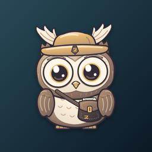

404 · a wrong turn
This page wandered off.
Pip checked the satchel and the workspace lane. Nothing here. The desk is still exactly where you left it, though.

404 · a wrong turn
Pip checked the satchel and the workspace lane. Nothing here. The desk is still exactly where you left it, though.